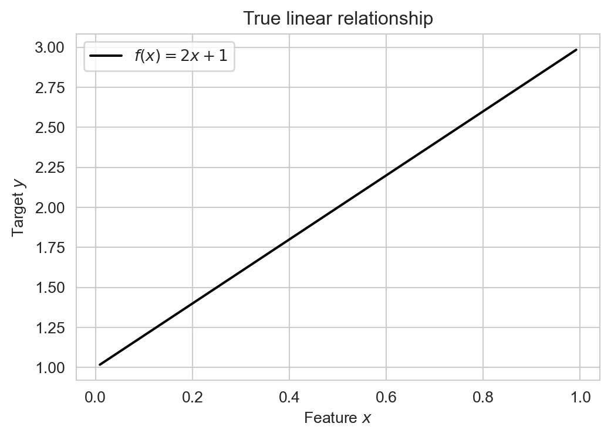
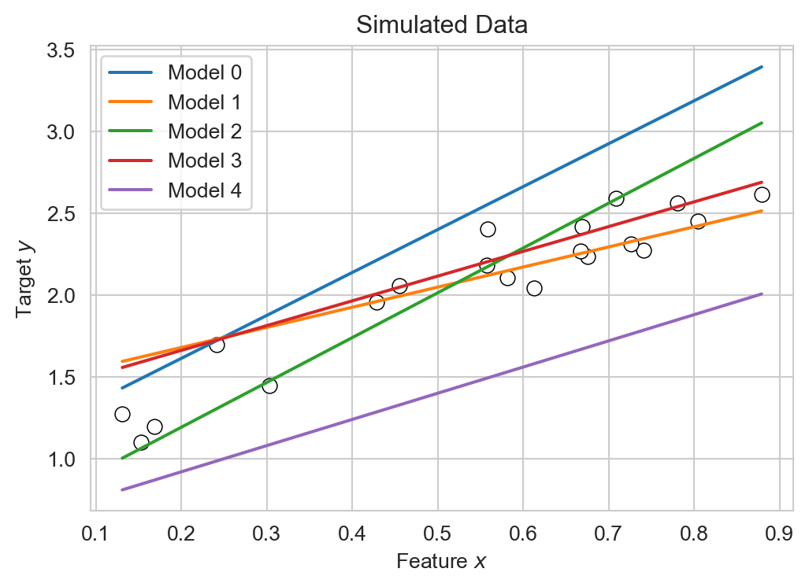
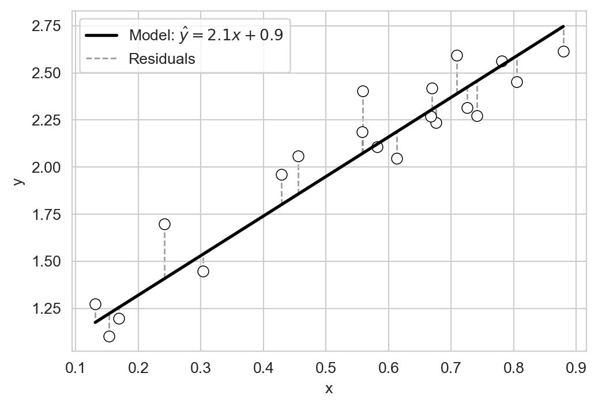

In the task of automated prediction, we aim to use a relationship between a set of input features (also called predictors or independent variables) and an output (also called a target). We use this relationship to make a prediction about what outputs would be observed from new inputs.
For example, suppose we have a numerical input \(x\) and a numerical output \(y\), and suppose we knew that the input \(x\) and the output \(y\) were related according to the following linear relationship: \[
\begin{aligned}
y = f(x) = 2x + 1
\end{aligned}
\]
Let’s visualize this relationship:
import numpy as npimport pandas as pdimport seaborn as snsfrom matplotlib import pyplot as pltsns.set_style("whitegrid")n_points =20x = np.random.rand(n_points)y =2* x +1fig, ax = plt.subplots(figsize=(6, 4))sns.lineplot(x=x, y=y, color ="black", ax=ax, label =r"$f(x) = 2x + 1$")ax.set(title ="True linear relationship", xlabel =r"Feature $x$", ylabel =r"Target $y$")ax.legend()

Figure 3.1: Example of a true linear relationship between an input feature \(x\) and an output target \(y\).
If we knew this input-output relationship, then we could use it to make predictions for any value of \(x\). For example, if we observed an input value of \(x = 0.5\), we could predict that the corresponding output would be \(y = 2(0.5) + 1 = 2\):
Figure 3.2: Predicting the value of \(y\) with a new input \(x=0.5\) using the true relationship from Figure 3.1.
The problem, however, is that nature very rarely gives us a true mathematical relationship between inputs and outputs. Instead, we get data. Rather than knowing the true relationship \(y = f(x)\), we instead observe a set of input-output pairs \((x_i, y_i)\) for \(i = 1, \ldots, n\). What we are given looks much more like this:
Figure 3.3: Simulated data points generated from a linear relationship with added noise.
Our goal is to use this data to learn an approximate relationship \(\hat{y} = \hat{f}(x)\) that we can then use to make predictions for new input values.
Linear Regression
Technically, the problem of learning a relationship between numerical inputs and a numerical output is called regression. We’ll consider linear regression, which assumes that the relationship between input and output is linear. In the case of a single input \(x\) and output \(y\), this means that we are trying to learn a relationship of the form:
\[
\begin{aligned}
y \approx \hat{y} = \hat{f}(x) = wx + b
\end{aligned}
\]
Here, \(\hat{y}\) is the name that we’ll give to our model’s predicted output, which is hopefully close to the true output \(y\). The predicted output is a linear function of the input \(x\). In this function, \(w\) is the slope of the line and \(b\) is the intercept. We call \(w\) and \(b\) the model parameters. The task of fitting the model is the task of finding values of \(w\) and \(b\) that make the model’s predictions \(\hat{y}\) as close as possible to the observed outputs \(y\) in the training data.
Let’s construct a data frame with several candidate examples of model parameters \(w\) and \(b\):
Each row of this data frame corresponds to a different candidate linear model. Let’s visualize their predictions:
for i inrange(k_params): w = model_df.loc[i, 'w'] b = model_df.loc[i, 'b'] df["y_pred"] = w * df["x"] + b sns.lineplot(data=df, x='x', y='y_pred', ax=ax, label =f'Model {i}')fig_1

Figure 3.4: Predictions from several candidate linear regression models.
Each of the models gives different predictions \(\hat{y}\) given the same input \(x\). How do we determine which of these models is “best”? A reasonable intuition here is that a good model should make predictions \(\hat{y}\) which are close to the obserevd outputs \(y\)on average. One way to express the idea of closeness is to consider the residuals \(r_i = y_i - \hat{y}_i\), which measure the difference between the observed output \(y_i\) and the predicted output \(\hat{y}_i\) for each data point \(i\):
fig, ax = plt.subplots(figsize=(6, 4))sns.scatterplot(data=df, x='x', y='y', ax=ax, edgecolors ="black", facecolors='white', s=50)# example model parametersw =2.1b =0.9df['y_pred'] = w * df['x'] + b# plot regression linex_vals = np.linspace(df['x'].min(), df['x'].max(), 200)ax.plot(x_vals, w * x_vals + b, color='black', linewidth=2, label=fr'Model: $\hat{{y}}={w:.1f}x+{b:.1f}$')# draw residuals as vertical lines from observed y to predicted yax.vlines(df['x'], df['y'], df['y_pred'], color='gray', linestyle='--', alpha=0.8, linewidth=1, label ="Residuals", zorder =-10)ax.legend()

Figure 3.5: Residuals for a candidate linear regression model.
Let’s quantify the idea of closeness using these residuals. The following function accepts three arguments: the model_df containing coefficients, the data df containing x and y, and a metric function that quantifies the closeness between y and predicted y_pred. The result is a column of scores computed according to metric.
For example, suppose we use the mean residuals to score the candidate models from above. In this case, the model’s score, which we’ll call \(L\), would be:
If we compare the mean residuals for each model to Figure 3.4, we can see that our use of the mean residual as a scoring metric tends to prefer models that under-predict (i.e. models with negative mean residuals). That doesn’t seem to be a great idea, and doesn’t match our intuition for which of the models above best “fits” the data.
A more standard idea is to use not the mean error, but the mean squared error (MSE) as a scoring metric. The MSE is defined as:
The mse identifies model np.int64(3) as the best model among our candidates. Comparing to Figure 3.4 suggests that the preferred model under the MSE does indeed seem to be one that fits the data better.
Working With Real Data: Abalone Age Prediction
Let’s now try linear regression with some real data. Abalone are a type of sea snail which are often harvested for food and jewelry.
Several red abalone, from a vendor selling them for food. Image credit: Hog Island Oyster Co.
Determining the age of an abalone is an important task for sustainably managing the population. The age of an abalone can be determined by counting the number of rings on its shell, but this is very time-consuming relative to measuring other physical characteristics of the abalone like its size and weight. It would be helpful if we could reliably predict the age (number of rings) of an abalone from these other physical characteristics. Let’s download a data set to help us do this:
The abalone data set (Nash and Ford 1994) contains measurements for 4177 individual abalones. Here’s how the data looks:
We have unscaled the numerical columns back to their original units.
df.head()
sex
length (mm)
diameter (mm)
height (mm)
whole_weight (g)
shucked_weight (g)
viscera_weight (g)
shell_weight (g)
rings
0
M
91.0
73.0
19.0
102.8
44.9
20.2
30.0
15
1
M
70.0
53.0
18.0
45.1
19.9
9.7
14.0
7
2
F
106.0
84.0
27.0
135.4
51.3
28.3
42.0
9
3
M
88.0
73.0
25.0
103.2
43.1
22.8
31.0
10
4
I
66.0
51.0
16.0
41.0
17.9
7.9
11.0
7
The sex column is qualitative (Male, Female, Infant), while the other columns give numerical units. The length, diameter, and height columns are in millimeters, while the whole_weight, shucked_weight, viscera_weight, and shell_weight columns are in grams. The rings column gives the number of rings on the abalone’s shell, which is our target variable. If we take a look at a few of the numerical columns, we can see that they tend to correlate with rings, giving us hope that we can use them as predictors:
Figure 3.6: Pairplot showing relationships between several physical characteristics of abalones and their age (number of rings).
The column whole_weight is a composite of the shucked_weight (the body of the abalone), viscera_weight (the gut), and shell_weight (the shell, after drying). The whole_weight is not exactly equal to the sum of these three weights, but it is very strongly correlated with them:
Now we can try building linear regression models to predict rings in terms of the other features. Here’s an example of doing this by hand: we’ll try out the model
This model has an MSE of mse_value=2.5e+06. Now that we’re done with the rings_pred column, let’s drop it and the summed_weight column we created earlier:
We could imagine trying to loop through different values of the parameters to find a better model, but this would be cumbersome, especially if we wanted to use more than two features. To address this, we’ll introduce the idea of model training as an optimization problem, and take a look at the scikit-learn library for automating this process.
Sidebar: Training as Optimization
A general version of a linear regression model with many features can be written as follows:
To train the model, we’ll choose parameters\(w_1, w_2, \ldots, w_p, b\) to minimize the MSE; that is, we’ll find these parameters to make the MSE as small as possible. Formally, we often write this as
This is an optimization problem. The challenge of finding an optimal value for the parameters is a very rich one with many interesting solution algorithms. For our purposes in this class, we’ll take advantage of software packages which have already implemented these algorithms for us.
scikit-learn for Linear Regression
The scikit-learn package in Python, also called sklearn, is one such package.
from sklearn.linear_model import LinearRegression
We’ll use this model to fit a linear regression model to predict rings from all the other features in the abalone data set. First, we need to convert the qualitative sex column into numerical columns using one-hot encoding:
Now instead of a single column for sex, we have two binary columns: sex_I and sex_M, indicating with a 1 whether the abalone is an infant or male. If both colummns are zero, then the abalone is female instead.
The scikit-learn API expects that we pass in a data frame X containing the features (inputs) and a series y containing the target (output). Let’s create these now:
X = df.drop(columns=['rings'])y = df['rings']
Now, finally, we are ready to fit the linear regression model. Finding the model that has the best values of the parameters is as simple as calling the fit method on a LinearRegression object:
LR = LinearRegression()fit = LR.fit(X, y)
We can extract predictions for the model using the predict method:
y_pred = LR.predict(X)
/Users/mlinderman/miniconda3/envs/cs1010-notes/lib/python3.10/site-packages/sklearn/linear_model/_base.py:280: RuntimeWarning: divide by zero encountered in matmul
return X @ coef_ + self.intercept_
/Users/mlinderman/miniconda3/envs/cs1010-notes/lib/python3.10/site-packages/sklearn/linear_model/_base.py:280: RuntimeWarning: overflow encountered in matmul
return X @ coef_ + self.intercept_
/Users/mlinderman/miniconda3/envs/cs1010-notes/lib/python3.10/site-packages/sklearn/linear_model/_base.py:280: RuntimeWarning: invalid value encountered in matmul
return X @ coef_ + self.intercept_
Once we have the predictions, we can also extract the MSE for the model:
mse(y, y_pred)
np.float64(4.979110080607066)
This MSE is considerably smaller than the MSE we made with our by-hand model earlier!
It can also be helpful to look at the coefficients that the model learned for each feature:
These coefficients can be quite helpful, although the interpretation is often subtle. It’s tempting to believe that larger coefficients mean that a given feature is “more important” for predicting the target, but things are not usually this simple. For example, notice that two of the weight features actually have negative coefficients, suggesting, for example, that a larger value of shucked_weight (g) should correspond to a younger abalone! This comes from the fact that shucked_weight is strongly correlated with shell_weight (g) and viscera_weight (g). This phenomenon, called multicollinearity in the statistics literature, can make interpreting coefficients quite tricky. We’ll revisit this issue later in the course. In the context of prediction, it’s often not necessary to interpret these coefficients at all.